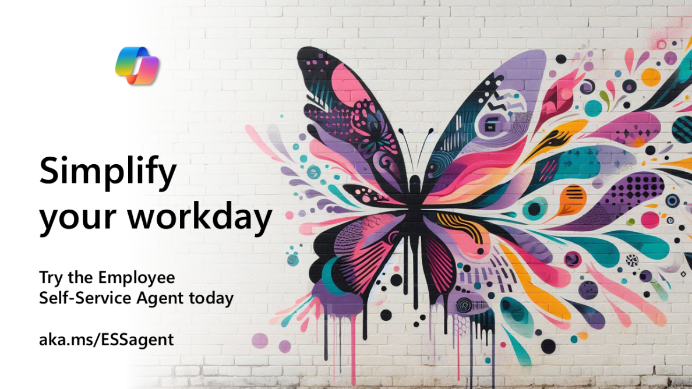
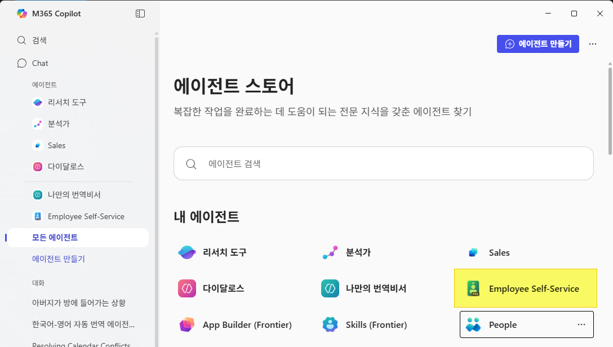

Stage6. Employee Self Service Agent
이번 단계에서는 직원 셀프 서비스 에이전트를 체험해 보겠습니다.
이 에이전트는 직원들이 자주 묻는 질문에 대한 답변을 제공하고, 필요한 경우 HR 팀에 문의할 수 있도록 도와줍니다.
Tip ▶ 아시나요? 우리 사무실 통로에 항상 공지되고 있는 직원 셀프 서비스 에이전트가 있다는 것을...

1️⃣ 첫번째 단계, 직원 셀프 서비스 에이전트 사용해보기
- 코파일럿의 Work Chat에 접속합니다. https://m365.cloud.microsoft/chat/
- 직원 셀프 서비스 에이전트와 대화를 시작합니다. "Hi, I need help with my benefits." 라고 입력해 보세요.
- ESS 에이전트는 이미 직원들에게 배포되어 있습니다.

- 에이전트가 제공하는 답변을 확인하고, 추가 질문이 있다면 계속해서 대화를 이어가 보세요. 예: "Can you explain the health insurance options available to me?"
- 에이전트가 제공하는 정보가 유용한지 평가하고, 필요하다면 HR 팀에 직접 문의할 수 있는 방법도 알아보세요.
2️⃣ 두번째 단계, ESS Agent를 이용해 퀴즈 풀기
이제 직원 셀프 서비스 에이전트를 이용해 간단한 퀴즈를 풀어보겠습니다.
아래 링크를 클릭하여 퀴즈를 풀고 답변을 제출해 주세요.
퀴즈 1 - 나의 애완 고양이를 회사 사무실에 데려올 수 있다
퀴즈 2 - GUEST용 WIFI를 신청할 수 있는 사이트 URL은 https://aka.ms이다.
퀴즈 3 - ESS 에이전트로 동료들의 Base Pay를 조회할 수 있다
퀴즈 4 - 도쿄 시나가와 오피스의 식당 (Cafe)는 18층에 있다.
퀴즈 5 - Perks+ 프로그램으로 내 컴퓨터의 새로운 채굴용 GPU를 구매할 수 있다
3️⃣ 세번째 단계, 퀴즈 답변 제출하기
퀴즈 답변을 아래의 링크를 통해 제출해 주세요.
🗝️ 수고하셨습니다. 던전관리자가 다음 스테이지로 가는 암호를 정해진 시간에 공지할 것입니다.